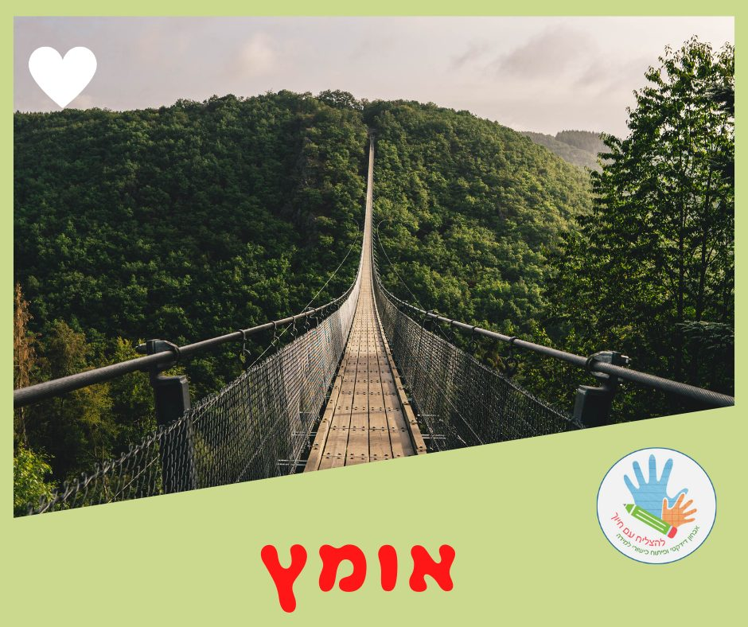

אומץ

#אומץ- תכונה אנושית המגלמת את היכולת להתמודד עם פחד, כאב, סכנה, אי-ודאות או איום. (מתוך ויקיפדיה)
הפחד הוא אנושי וכולנו פוחדים,
אבל האמיצים יודעים להתגבר ולהמשיך לפעול - על אף הפחד!
(מתוך אאוריקה)
כמה אומץ צריך כדי להקריא בקול רם בכיתה כשהמורה מבקשת?
כמה אומץ צריך להרים את היד ולענות על שאלה?
כמה אומץ צריך כדי להתמודד עם מבחנים ואתגרים חדשים ולא מוכרים?
הרבה.
אני פוגשת תלמידים שלא מאמינים ביכולות שלהם.
חוששים אפילו לנסות,
אולי ה- #כישלון הבא מחכה מעבר לפינה..?
חוזרת ואומרת להם,
שמטעויות אפשר ללמוד הכי טוב!
גם הקטנים וגם הגדולים.
ומעודדת אותם, שינסו ויתנו צ'אנס,
יחד איתי.
ברגע שמנסים ומתמודדים,
אפשר לגלות שהשד לא כזה נורא!
אפשר להצליח!
הם מבינים שהם מסוגלים!
ה- #הצלחות האלה מחזקות אותם,
'ממלאות להם את הדלי'
וסוללות את הדרך להתמודדות עם #אתגרים חדשים,
ולהצלחות נוספות!
אריסטו אמר ש-
"אומץ היא הדרך האמצעית בין פחד ובין פזיזות"
האמיצים מוצאים את האיזון בין פחד לא רציונאלי לבין פזיזות.
ולשם את מכוונת את התלמידים שלי.